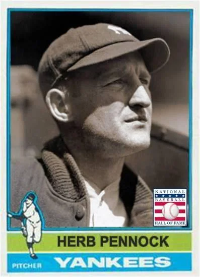

Herb Pennock "The Knight of Kennett Square"
Career Highlights & Facts
(Facts are AI-generated and may require verification)
- Known as a master of the curveball, this pitcher was famously acquired by a legendary organization in a trade that involved a massive cash payment of $50,000.
- He was a key figure in a championship-winning rotation, often described as a 'non-ace' who possessed an uncanny ability to win the most critical games of the season.
- A refined individual who preferred fox hunting and antique collecting over the typical lifestyle of his peers, he was often referred to by a title reflecting his gentlemanly demeanor.
Would you like to find out more about Herb Pennock?
Career Totals
| WAR | W | L | ERA | G | GS | SV | IP | SO | WHIP |
|---|---|---|---|---|---|---|---|---|---|
| 45.0 | 241 | 162 | 3.60 | 617 | 419 | 37 | 3571.2 | 1227 | 1.348 |
Statistics via Baseball-Reference.com
The Original Clue